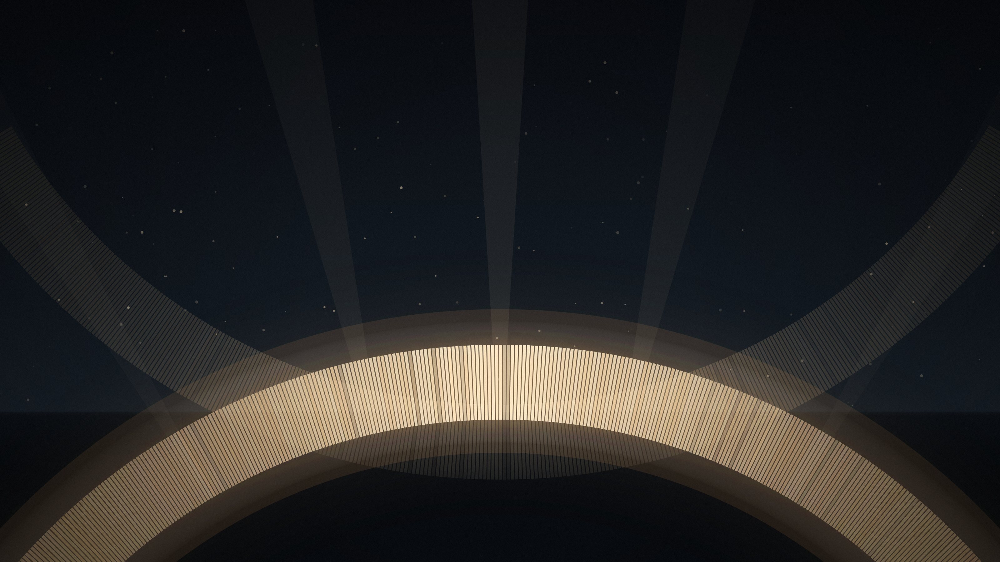

Regierungspräsidium · Verwaltung
Vibecoding · eigene Projekte im LVM
LLM + Git: vom dauerhaften Projektwissen zu internem GitLab, Containern und Datenbanken
13 Folien · etwa 7 Minuten · seit 2026-09-26
Jeder Vortrag hat seine eigene Adresse und lässt sich dort vorführen, im Browser bearbeiten und als eine HTML-Datei herunterladen.
LLM + Git: vom dauerhaften Projektwissen zu internem GitLab, Containern und Datenbanken
13 Folien · etwa 7 Minuten · seit 2026-09-26
Unterpräsentation, rund 10 Minuten: woher die Hauskatze kommt, wie sie wahrnimmt und schnurrt, warum sie für uns miaut, auf den Pfoten landet und so viel schläft
16 Folien · etwa 10 Minuten · Variante von vave · seit 2026-09-28

Impuls, 30 Minuten plus Fragen: Sprache trifft Gedächtnis. Was Sprachmodelle und Agenten sind, woher Git kommt, was es bringt und wie eine Runde läuft, am echten Beispiel dieser Präsentation
28 Folien · etwa 30 Minuten · Variante von rp · seit 2026-09-27
Als Kopie eines vorhandenen Vortrags: node tools/new-deck.mjs kurzname --from rp --title "Titel" --audience "Publikum"
Aus einer im Editor gespeicherten Datei: node tools/new-deck.mjs kurzname --from-export Vibecoding-bearbeitet.html
Danach node build.mjs, einchecken, und der Vortrag erscheint hier unter /kurzname/.